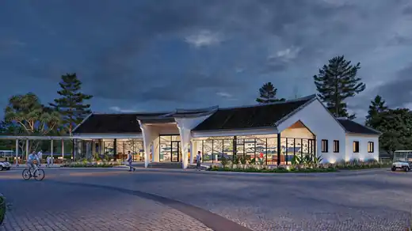

UÔNG BÍ · YÊN TỬ · QUẢNG NINHTHIÊN PHÚC
THIÊN PHÚC
VĨNH HẰNG VIÊN
Miền an nghỉ thanh tịnh giữa cảnh quan sinh thái và không gian văn hóa tâm linh Yên Tử.
32,54 haQuy mô dự án
451 tỷ đồngTổng mức đầu tư
Quý II/2028Dự kiến hoàn thành và đưa vào hoạt động
TỔNG QUAN
Không gian tưởng niệm được quy hoạch hiện đại và đồng bộ
Dự án Công viên nghĩa trang Thiên Phúc Vĩnh Hằng Viên triển khai tại khu vực Uông Bí – Yên Tử, định hướng kết hợp hạ tầng kỹ thuật hiện đại với cảnh quan sinh thái và giá trị tâm linh truyền thống.
Tìm hiểu chi tiết →VỊ TRÍ DỰ ÁN
Kết nối thuận tiện Hà Nội – Hải Phòng – Hạ Long – Yên Tử
Thiên Phúc Vĩnh Hằng Viên tọa lạc tại khu vực Uông Bí – Yên Tử, tỉnh Quảng Ninh, gần các điểm văn hóa tâm linh và các trục giao thông quan trọng của khu vực.
Khoảng 1 giờ 45 phút từ Hà NộiKhoảng 30 phút từ Hải PhòngKhoảng 30 phút từ Hạ LongGần Yên Tử và các điểm tâm linh lớn

Hạ tầng giao thông & liên kết vùng
6 TIỆN ÍCH NỔI BẬT
Hệ thống tiện ích đồng bộ cho một không gian tưởng niệm an yên

Hồ cảnh quan

Nhà điều hành

Bãi đỗ xe

Cây xanh & vườn hoa

Chăm sóc mộ phần
SẢN PHẨM